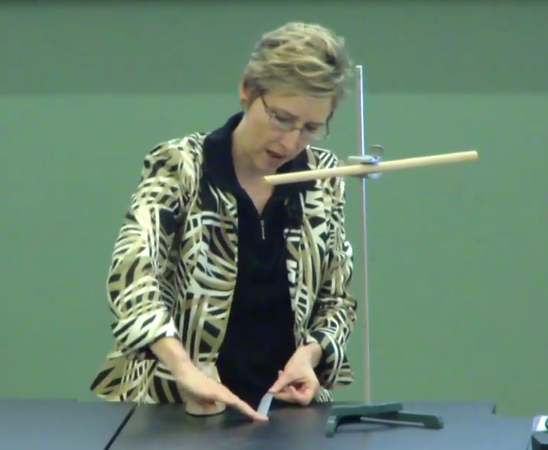
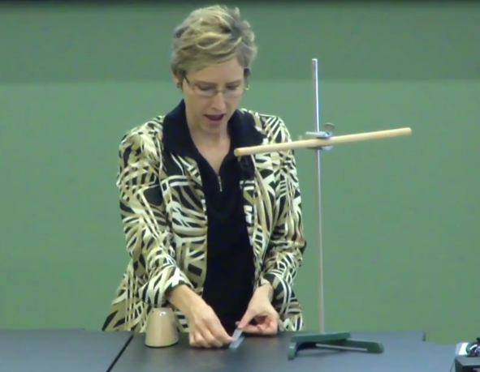

Daha önce nokta yüklerinin elektrik alan hesabını gördük. Eğer daha çetrefil bir elektrik alan tipi varsa, bu tür alanları birden fazla noktasal yükün üstdüşümü (toplamı) olarak görebiliriz. Bu şekilde bir kürenin, bir iki-kutup yükünün elektrik alanını hesapladık. İki-kutup alttadır,
Resimdeki notasyon ders kitabından geliyor, bu notasyonda \(\hat{y}\) bir birim vektördür ve y ekseninde boyunca yukarı gösteren birim vektördür, yani \(<0,1,0>\). Bu eksen boyunca belli bir elektrik alanı var. Diğer her yerde biraz daha farklı bir alan var, burada pozitiften çıkıp negatife doğru bir gidiş görülüyor, bu demektir ki eğer tüm kordinatı yatay olarak keşsek, orada elektrik alanı hep aşağı doğru gitmek zorunda. Bunun formülü sağ tarafta görülüyor. Son derste bunları gördük.
Bugün yükün korunması / muhafaza edilmesi (conservation of charge) konusunu göreceğiz. Plastik bantla ilginç bir deney yapacağız, bu tür bantın niye her şeye yapıştığını göreceğiz (yapışkan kısmı var tabii, ama bunun haricinde hala ek bir yapışkanlığı var). Sonra atomların kutuplaşması (polarization) konusuna bakacağız, ve bir nötr atom ile noktasal parçacık arasındaki kuvveti hesaplayacağız.
Yükün muhafaza edilmesi kuralı der ki bir sistemin toplam yükü, yani sistemin [baktığımız bölge] yükü artı onun etrafındaki yüklerin toplamı hep aynı kalmalıdır. Sistemi nasıl tanımlarız? Bir fizik problemini incelerken "sistemin'' ne olduğuna biz karar veririz. Problem alanının etrafına hayali bir kutu çizeriz, ve o kutunun içindekiler bizim sistemimiz olur, kutu dışındaki her şey onun "etrafı'' olur. Ve her durumda sistem + etrafındakiler tüm fiziksel evren olmalıdır. Yani sistem artı etrafının toplam yükü değisemez derken evrenin yükü değisemez diyoruz, ki bu doğru.
Fakat yükü bir yerden diğerine kaydırmak mümkün. Mesela yükü sistemden alıp etrafındaki bölgeye taşıyorum, ya da ters yönde. Mesela alttaki resimde keyifsiz adam var, onun kafasına balonları sürtersek, saçı fazla yok ama sürtülen yerlerde balonlar negatif yüklü, kafası pozitif yüklü hale gelecektir. Bu durumda bir yerden diğerine yük transferi yapmış olduk, ama toplam yük aynı. Sistem adamın saçı diyebilirim, geri kalan her şey, balon, vs. etraf olur, toplam yük değişmedi ama yükü taşımış olduk.
Peki yükü yoketmek, ya da yoktan yaratmak mümkün müdür? Bir hayır cevabı geldi. Bir yükün yaratılmış gibi durduğu bir örnek aklınıza geliyor mu? Evet, biriniz çok güzel bir gerçek dünya örneğinden bahsetti, bir pil. Bir pile bakarsak negatif ucu vardır, pozitif ucu vardır, onlar işaretlenmiştir, sanki o pili kullanıp "bitirince'' yükler bir yere gitmiş, yokolmuş gibi duruyor.. Ama biraz önce bahsettiğimiz kurala göre pil + etrafının toplam yükü değişmemiş olmalı.
Biriniz madde, anti-madde fenomeninden bahsetti. Bir parça maddeyi alıp bir anti-parçayla etkileşime soksam birbirlerini yokederler. Ve bu yokolma olmadan önce muhakkak bir yük taşıyor olurlardı değil mi? Her iki taraf ta nötr olabilir tabii, ama arkadaşınızın dediği gibi bir elektron ve pozitron etkileşime girerse, bu iki parçacık madde / anti-madde eşidir, ve bum diye birbirlerini yokederler, ve o zaman yük kaybolmuş mu olur? Bu tür bir etkileşim nadir bir olay değildir bu arada, her tarafınızda, vücudunuzda, elektron / pozitron eşlerini birbirlerine sürekli yoketmekle meşgullar. Diğer yandan elektron, pozitronlar ortaya da çıkıyorlar. Uzay parça / anti-parça eşlerinin kaynayan suyun baloncukları gibi sürekli fıkır fıkır bir hareket halindedir. Eşler sürekli ortaya çıkar, ve sürekli yokolurlar, bu sürekli olur.
Hmm.. o zaman evren yük yaratıyor, yük yokediyor mu demektir bu? Evet, bu hakikaten oluyor. Ama, dikkat, yokolma, yaratılma hep eşli oluyor, bir negatif-pozitif çift (toplam yük sıfır) beraber yokoluyor, ya da beraber yaratılıyor, hala toplamda bir değişim yok. Yani yük yaratmak, yoketmek çiftler üzerinden mümkün, bu şekilde yük muhafaza kuralı çiğnenmemiş oluyor.
Bant konusuna gelelim. [Hoca biraz dramatik şekilde bir kağıdı katlayıp onu bantla kapatmaya uğraşıyor, şakadan biraz beceriksiz hareketler yapıyor ve bant sürekli yanlış yerlere yapışıyor, el tersine vs]. Bu sizin başınıza geldi mi? Görüyorsunuz bantın sadece yapışkan kısmı değil, öteki tarafı da absürt şekillerde oraya buraya yapışıyor. Burada bir şeyler dönüyor gibi geliyor bana...
Şimdi kontrollü bir deney yapmak için iki bant parçasını üst üste masanın üstüne yapıştıracağım.
 
Çünkü bantı açarken bir şeyler oluyor gibi geliyor bana [hoca biliyor tabii ne olduğunu ama bir düşünme şeklini göstermek için bunları aktarıyor], o sebeple iki bantı üst üste koydum, birini çekince ne olduğuna bakacağım. Ve çekiyorum,
ve bakıyorum bant ters dönüp acaip bir şekilde bana yapıştı bile.. Deneyi tekrarlayayım [tekrar yapıştırıp çekiyor] bu sefer dikkatli olayım bana yapışmasın. Alıp bantı platforma yapıştırıyorum. Sonra ikinci bir bantı alıyorum, deneyi tekrarlıyorum, bu ikinci bant ile birinci arasındaki etkileşime bakacağım şimdi. Sürekli masadaki aynı banta yapıştırıp çekmemin sebebi onu "referans bantı'' olarak kullanmak istemem, böylece 2. banta olanın 1. banta olanla tıpatıp aynı olduğunu garantilemiş oluyorum.
Bir bantı referans bantına yapıştırıp çekip çıkarmadan önce nötr bir pozisyondan başlamayı garantilemiş oluyorum [çünkü hoca dokunarak eğer varsa fazla yükü kendi almış olur, ya da masa bir nevi "toprak'' olacaktır, nötr referanslık buradan gelir]. Sonra bantı çekip çıkartınca ilginç şeyler olabilir tabii. Devam edelim, 2. bantı 1. banta yaklaştırayım,
Görüyor musunuz? Nasıl birbirlerini itiyorlar? Burada bir şeyler dönüyor.. Bu ders elektrik ve manyetik iletişimler dersi, o zaman yüklerle alakalı bir şeyler oluyor olmalı. Şimdi üçüncü bir bant hazırlayalım, aynı şekilde, ve bu bant ta 1. ve 2. bantı itiyor.
Acaba bu bantlar eğer yaklaşsam bana çekilir mi itilir mi? Önce kendimi topraklayım [sınıftaki masaya dokunuyor, sonra asılı bantlardan birine yaklaştırıyor]. Bir çekim olduğunu görüyoruz. Bu etki her ne ise çok kısa menzilli çünkü etkisini görmek için elimi çok yaklaştırmam gerekti. Kıyasla iki bantın arasındaki etki çok daha uzun menzilli idi. Şimdi bu olanları açıklayalım.
Olanlar nedir? Bantı çekerken yüklerin bir şekilde bir değişimden geçerek, dağılımını değiştirdiğini tahmin edebiliriz. Evreninin toplam yükünü değiştiremeyiz, ama yükleri bir yerden diğerine taşıyabiliriz, ya da çiftsel olarak yaratıp yokedebiliriz (bu örnekte olan büyük bir ihtimalle bu değil). Büyük ihtimalle olan şudur: görülen bantın bir yapışkan kısmı var. Ben kimyacı değilim, hikayenin tamamı için bir kimyacıya danışmak iyi olur, ama bantın yapışkan kısmının uzun, sarkık moleküllerden oluştuğunu biliyoruz. Genelde kimyada bu oluş bilinir, yapışkanlık uzun, sarkık molekül demektir. Ve tahminimiz o'dur ki bir bantı ötekinden çekip çıkardığımızda bu uzun sarkık moleküllerden bazıları parçalanır. O parçalanma sırasında bir elektron bazen bir tarafta, bazen öteki tarafta kalabilir, o zaman o tarafın toplam yükü negatife doğru değişir, diğer tarafta pozitif yüklü yarı molekül kalır, vs.
Bir elektriksel kuvvet olmalı diye düşünüyoruz çünkü gördüğümüz itme kuvveti 1) yükler (bantlar) arasında direk bir çizgi üzerinde etki ediyor 2) yükleri uzaklaştırdıkça etkisi azalıyor 3) kuvvet yüklerin miktarına doğru oranlı.
Şimdi ipek bir bezi kullanarak banttaki yüklerin işaretlerini kontrol edelim. Bir ipek bezi cam boruya sürtersek bezde eksi camda artı yük oluşur. Niye olduğunu ispatlamayacağım, böyle olduğunu kabul edelim, deneysel olarak en azından bunu biliyoruz.
Camdaki yükün bilgisini kullanarak bantlarda ne olduğunu anlayabileceğiz. Tamam, yeterince sürttük, bantlara yaklaştırıyoruz, ve ne oluyor? Bantlar itiliyor, o zaman bantlarda da aynı yük, yani pozitif yük olmalı. Diğer yandan bezde negatif yük olmalı, onu yaklaştırıyoruz, o bantları çekmeli [hafif bir çekim görüldü, hoca bezin daha dağınık, büyük yapısı sebebiyle yükünün herhalde tam odaklı olmadığını söyledi].
Sürtme ile hangi yük, nasıl oluşuyor? Tahmin edilen büyük moleküllerin parçalandığı ama niye bu parçalanmanın negatif ya da pozitif yarattığı bilinmiyor, şu anda bu araştırma konusu. Camın, ya da bant örneğinde bile uzun bir molekülün parçalanması durumu var ama niye buradan negatif ya da pozitif yük çıkar bunu bilmiyoruz.
Şimdi nötr obje ile pozitif yük arasındaki çekime gelelim. Hatırlarsak bantları hazırladıktan sonra elimi banta yaklaştırdım ve çekim vardı. Ben etrafa, yere bağlı objelere dokuarak kendimi topraklamıştım, yani yüküm nötr durumdaydı. Benimle bantın arasında çekim vardı, yani pozitif yük ile sıfır / nötr yük arasında, bu durumu da bir şekilde açıklamamız lazım. Belki elimde, nötr olmasına rağmen, hala elektronlar, protonlar, nötronlar var, ve elimdeki elektronlar bir şekilde banttaki pozitif yük ile etkileşime geçiyor. Bu fikri inceleyelim isterseniz.
Tekrar hidrojen atomuna dönelim; insan vücudu, ya da cam, bant daha çetrefil atomlardan oluşuyor ama basit örnek ile başlamak her zaman öğreticidir.
Hidrojen atomu tek bir proton ve tek bir elektrondan oluşur, merkezinde çekirdeği vardır, proton buradadır ve bu çekirdeğin büyüklüğü aşağı yukarı \(10^{-15}\) metredir. Elektron protonun etrafında, onu küresel bir bulut olarak gösterdim, elektron müthiş hızlı bir şekilde bir orada, bir burada hareket ederek bu küreyi oluşturuyor. Bu kürenin büyüklüğü yaklaşık olarak \(10^{-10}\) metre, yani 1 \({\AA}\) (angstrum).
Hidrojin çekirdeğindeki proton noktasal bir yüktür, bu yüklerin alanını hesaplamayı biliyoruz. Peki elektron küresi? Onu da noktasal yük olarak görebiliriz, eğer yeterince uzaktaysak o kürenin dışında elektronun etkisi yine noktasal olarak görülebilir. O zaman dışarıdaki herhangi bir nokta için toplam etki sıfır olacaktır, iki noktasal yük, biri negatif, biri pozitif, toplam etki sıfır.
Daha detaylı bakmak gerekirse, pozitif bir yükün atoma yaklaştığını düşünelim. Elektron bulutu o yüke bir çekim hisseder ve fiilen çekilir de, bunun sonucu olarak negatif yükün merkezi noktası biraz kaymış olur.
Protonun itildiğini / yer değiştirdiğini iddia etmeyeceğim, çünkü o çok daha büyük bir kütleye sahip. Bu kayma sonucunda atomda bir iki kutupluluk momenti (dipole moment) ortaya çıkar değil mi? (Kaymış) bulutun merkezini noktasal eksi yük, protonu noktasal artı yük olarak düşünürsek,
gibi bir iki kutuplu resim ortaya çıkar. Bu duruma özendirilmiş iki kutupluluk denir, kalıcı değildir, yaklaşan pozitif yük sayesinde ortaya çıkmıştır. Eğer pozitif yükü dışarı çıkartırsam iki kutupluluk ta ortadan kalkar.
Soru
Negatif yüklü bir bant yapabilir miydik?
Cevap
Bu ilginç bir soru. Deneyelim. Daha önce bantı çektiğimizde üstteki bant pozitif halde oluyordu, o zaman onu çekip çıkarttığımız şey negatif olacaktır. Fakat bu bant topraklanmış masadan çıkartıldığı için oradaki yük nötr kalacaktı. O zaman bantı masadan çıkartalım, başka bir bant üzerine yapıştıralım ve o banttan çekip çıkartalım. Bu durumda üstteki bant yine pozitif, ama alttaki negatif olabilecektir.
Asılı bantlara yaklaştırınca görüyoruz ki üstteki yine itiyor, ama şimdi alttakine bakıyoruz, çektiğini görüyoruz.
İki kutupluluğa dönelim, pozitif yük yaklaştı, iki kutupluluğu özendirdi, ve böylece ortaya bir iki kutuplu yük çıktı. İki kutbun arasındaki mesafe \(s\), moment \(p = qs\).
Benzer durumu bir örnek üzerinde daha görelim. Pozitif yükler elime yaklaşsa, bir iki kutupluluk elimde ortaya çıkardı, elektron bulutu kayar, ve çekirdekteki pozitif yük ile biraz önce olanlar olurdu. Tabii bu bulut kaymasının çok ufak ölçekte olduğunu belirtmek isterim, yani el örneğinde elektronlar parmak ucuna, protonlar elimin tersine gitmiyor, bir ufak atomun elektron bulutunda çok ufak bir kayma oluyor. Ama bu kayma dışarıda etki yaratacak kadar bir değişime sebep oluyor.
Şimdi hepinize bir soru sorayım: atom A, atom B'den daha rahat kutuplaştırılabiliyor. Bu atomlardan hangisi \(r\) uzaktaki bir noktasal yüke daha çok çekilir? Cevap, daha rahat kutuplaştırılabilen atomun daha büyük özendirilmiş iki kutuplu momenti olduğu ve bunun daha kuvvetli bir elektrik alan oluşturacağı. Bu arada bu tür düşünce egzersizlerini her zaman noktasal yük bağlamına indirgeyebilirsiniz. Zaten iki kutuplu momentleri noktasal yüklerden başlayarak inşa ettik değil mi? Aynısını burada da yapabiliriz. Bir noktasal yük diğerinden daha çok hareket ettiyse bu birinci yük o harekete sebep olan dış faktöre daha yakın olacaktır, bu da mesafe kısalığı sebebiyle daha fazla kuvvet etkisi var demektir. Her iki düşünce şekli de doğru. Yani atom A daha fazla kuvvet hisseder.
Bu kutuplaşma fikrini tekrar gündeme getiriyor. Biraz önce gördüğümüz farklı atomların, kimyasal yapılarının farkı sebebiyle, elektrik alan uygulandığında farklı davranma durumuydu. Olanlar neydi? Elektrik alanı atoma uyguluyorum, atomun elektron bulutu kayıyor, bu atomu kutuplaştırıyor, ama bu kutuplaşma hangi kuvvette olur? Bu bir açıdan elektrik alanın kuvvetine bağlı tabii, daha kuvvetli alan daha kuvvetli bir etkiye, kutuplaşmaya sebep olur. Ama alanı uyguladığımız atom türü de bu etkide bir faktördür. Bir atomun kimyası, ya da hangi molekül içinde olduğu onun ne şekilde kutuplaştırılabildiğini etkileyecektir.
\[ \vec{p} = \alpha \vec{E} \]
ki \(\alpha\) bir materyelin "kutuplaştırılabilme (polarizability)'' oranı. Bu bir sabittir, kitaplarda (mesela kitap arkasıdaki bir referans bölgesinde) her tür madde için ne olduğu yazar. Bu sabiti hesaplamanın yolları da vardır, ölçmenin yolları da vardır (ve birbirine yakın çıkarlar bu arada, iyi bir şey).
İki kutupluluk, özendirilmiş iki kutupluluk momenti daha önce gördüğümüz gibi
\[ p = q s \]
Ve iki üstteki denklem aslında üsttekine eşit,
\[ |\vec{p}| = p = qs \]
Değişkenler arasındaki ilişki şöyle, alan ne kadar kuvvetliyse \(s\) o kadar büyük olur.
Şimdi bir noktasal yük ile yakınındaki kutuplaştırılabilir bir atomun arasındaki kuvveti hesaplayalım.
\[ \vec{E}_1 = \frac{1}{4\pi\epsilon_0} \frac{q_1}{r^2}\hat{r} \qquad (1) \]
Atomun elektron bulutu pozitif yüke doğru biraz yaklaşıyor, yani alan elektronu kutuplaştırıyor. Bu kutuplaştırma denklemini daha önce vermiştim,
\[ \vec{p} = \alpha \vec{E}_1 = \frac{1}{4\pi\epsilon_0} \frac{\alpha q_1}{r^2}\hat{r} \]
\(\alpha\)'nin ne olduğunu bilmiyorum, bize verilen atom türüne bağlı bir sabit bu. Ama kutuplaşmanın bağlı olduğu bir diğer faktör uygulanan elektrik alanın kuvveti.
Bu kuvveti biliyoruz, zaten bu sayede üstteki formüldeki \(\vec{E}_1\) için (1) kullanarak onu açabildik. Tüm bunlarla \(\vec{p}\)'yi hesaplayabiliyoruz, ve daha önce \(\vec{p}\)'yi iki kutuplu moment olarak görebildiğimizi söylemiştim. O gördüğümüz kutuplaşma iki kutuplu moment'tir.
Daha önce böyle değildi, mesela bir hidrojen atom durumunda nötr olduğu, kutuplaşmamış halde iken bir elektrik alan yaratmaz. Ama elektron bulutunu atom çekirdeğine nazaran kaydırınca ortaya bir iki kutuplu elektrik alan çıkacak.
Bu alanı üstte gördüğümüz eksen bağlamında hesaplamak için \(\vec{E}_2\) formülümüz var.
\[ \vec{E}_2 = \frac{1}{4\pi\epsilon_0} \frac{2\vec{p}}{r^3} = \frac{1}{4\pi\epsilon_0} \frac{2\alpha \vec{E}_1}{r^3} = \frac{1}{4\pi\epsilon_0} \frac{2\alpha}{r^3} \left( \frac{1}{4\pi\epsilon_0} \frac{q_1}{r^2} \hat{r} \right) \]
Üstte içinde \(\vec{p}\) olan formla başlıyoruz, daha önce bu şekilde göstermemiştim, içinde \(qs\) olan formu göstermiştim, tabii \(qs\) iki kutuplu moment, ki o \(p\), ve o çift kutuplu moment aynı zamanda üstte gördüğümüz kutuplaşma, \(\alpha \vec{E}_1\). Bu bağlantıyı görüyor muyuz? Yani \(p\) yerine \(\alpha \vec{E}_1\) koyacağım, ve \(\vec{E}_1\) noktasal yükün elektrik alanıdır.
Etrafta bir sürü \(r\) var, çift kutbun yaydığı alan \(r^3\) oranında zayıflıyor, noktasal yükün alanı \(r^2\)'e oranla zayıflar, bu her iki üstel öğe üstteki formülde var. Her beraber bölende \(r\) için üstel 5 olacak.
\[ = \left( \frac{1}{4\pi\epsilon_0} \right)^2 \frac{2\alpha q_1}{r^5} \hat{r} \sim 1/r^5 \]
Yani yakındaki bir noktasal yükün etkisiyle ortaya çıkan özendirilmiş kutuplaşmanın yarattığı elektrik alan \(r^5\)'e oranla azalır. Kutuplaşmış moment noktasal yük üzerinde \(\vec{E}_2\) alanıyla etki yaratıyor, ve bu alanın yarattığı kuvvet altta hesaplanabilir. \(\vec{E}_2\) zaten hesaplanmıştı,
\[ \vec{F}_1 = q_1 \vec{E}_2 = = \left( \frac{1}{4\pi\epsilon_0} \right)^2 \frac{2\alpha q_1^2}{r^5} \hat{r} \]
Bu kuvvet \(q_1\) üzerinde etki eden kuvvet, ama ona eşit ve ters yönde bir kuvvet atomun üzerinde de uygulanıyor demektir, çünkü aynı kuvveti birbirlerine uyguluyorlar, yani \(\vec{F}_2 = -\vec{F}_1\) olacak.
Böylece bir noktasal yük ile atom arasındaki kuvvetin aşağı yukarı \(1/r^5\) olduğunu bulmuş olduk, çünkü bu hesabın içinde çift kutupluluktan ortaya çıkan ve \(r^3\)'e oranla azalan bir kuvvet, ve noktasal yükün \(r^2\)'ye oranla azalan kuvvet etkisi var. Hep beraber \(1/r^5\) elde ediyoruz.
Eğer bir grafikleme yazılımı kullanmayı biliyorsanız bunu kontrol edebilirsiniz. \(r^2\) azalması yukarıdan aşağı sağa / sola açılan etekler gibi, \(r^3\) daha aşağı inip açılan etekler, \(r^5\)'e oranla azalmanın bu ikisinin toplamının bu sebeple müthiş hızlı aşağı inip açılan etekler olduğunu göreceksiniz.
plt.xlim(-1,1)
x = r = np.linspace(-4,4,100)
y1 = 1/np.abs(r)**2
plt.plot(x,y1,label='$r^2$')
plt.hold(True)
y2 = 1/np.abs(r)**3
plt.plot(x,y2,label='$r^3$')
plt.hold(True)
plt.legend()
plt.savefig('03_17.png')(Üstte grafikte \(1/r^5\) göstermedik, çok hızlı düştüğü için diğer grafikler yanında yokoluyor).
İşte bu sebeple artı yüklenmiş iki bantı yaklaştırınca normal bir mesafede etki görebiliyordum, çünkü bu etki \(r^2\)'e oranla azalıyor. Fakat elimi banta yaklaştırdığımdaki hangi kuvvet etkidedir? \(1/r^2\) kanunu mu, \(1/r^3\) kanunu mu, \(1/r^5\) kanunu mu geçerli burada? Cevap \(1/r^5\) değil mi, çünkü elim kutuplaşmış olacak. İşte bu sebeple elimi banta çok, çok yaklaştırmam gerekiyor ki bir etki görebileyim.